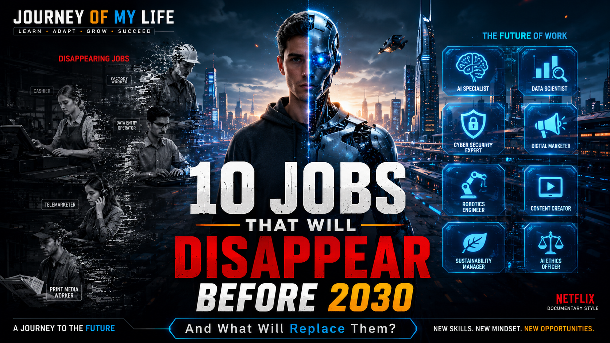

# By Journey Of My Life --- ## 🌍 Introduction The world is going through one of the fastest technological revolutions in human history. Artificial Intelligence (AI), automation, robotics, machine learning, and digital transformation are not just improving industries—they are completely reshaping them. Jobs that once required human effort, time, and skill are now being handled by intelligent systems in seconds. This change is not something of the future anymore—it is happening right now. Experts predict that by 2030, millions of traditional jobs will either disappear or evolve into completely new roles. At the same time, new career opportunities will emerge that did not even exist a few years ago. This raises an important question for everyone: > **Will your current job still exist in the future, or will it be replaced by technology?** In this article, we will explore the jobs most at risk, why they are disappearing, and what new opportunities are replacing them in the modern digital world. --- # ⚡ Why Jobs Are Disappearing So Fast? Before understanding specific jobs, it is important to know the main reasons behind this massive shift: ### 🤖 1. Artificial Intelligence (AI) AI can now perform tasks like writing, analyzing data, customer support, and even designing. ### ⚙️ 2. Automation Machines and software are replacing repetitive human work in factories, offices, and services. ### 🌐 3. Digital Transformation Everything is moving online—banking, shopping, education, and communication. ### 💡 4. Cost Efficiency Companies prefer machines because they reduce cost, errors, and time. ### 🚀 5. Speed & Accuracy Technology works faster and more accurately than humans in many tasks. --- # 📉 1. Data Entry Operators For decades, data entry was one of the most common office jobs. Employees manually entered information into systems. But now, AI tools and automation software can process massive amounts of data instantly with almost zero errors. ### ❌ Why It Will Disappear: * Repetitive manual work * High error rate compared to AI * Fully automatable process ### ✅ What Will Replace It: * AI Data Analysts * Data Automation Engineers * Business Intelligence Specialists * Data Quality Managers --- # 📞 2. Basic Customer Support Agents Customer support is rapidly changing due to AI chatbots and virtual assistants. Many companies now use AI systems that can answer thousands of queries 24/7 without human involvement. ### ❌ Why It Will Disappear: * AI chatbots are faster * No need for human repetition * Cost reduction for companies ### ✅ What Will Replace It: * AI Customer Experience Designers * Chatbot Trainers * Customer Success Managers * Human-AI Hybrid Support Experts --- # 🛒 3. Traditional Cashiers Retail stores are shifting toward self-checkout systems and digital payments. Customers now prefer scanning and paying without waiting in long queues. ### ❌ Why It Will Disappear: * Self-checkout machines * Mobile payment systems * Automation in retail stores ### ✅ What Will Replace It: * Smart Retail Managers * Digital Payment Specialists * Retail Technology Operators --- # 📢 4. Telemarketers Cold calling and manual sales calls are becoming outdated. AI-powered systems can now analyze customer behavior and send personalized offers automatically. ### ❌ Why It Will Disappear: * Low conversion rate * Customer irritation * AI automation in marketing ### ✅ What Will Replace It: * Digital Marketing Strategists * AI Sales Automation Experts * Growth Hackers --- # 🧾 5. Basic Accountants Accounting is no longer fully manual. Software now handles tax calculations, invoices, and financial reports. ### ❌ Why It Will Disappear: * Automated accounting tools * AI financial systems * Cloud-based bookkeeping ### ✅ What Will Replace It: * Financial Data Analysts * AI Finance Consultants * Business Intelligence Experts --- # 🏭 6. Manufacturing Workers Factories are becoming highly automated with robotics and smart machines. These machines can work 24/7 without breaks or fatigue. ### ❌ Why It Will Disappear: * Industrial robots * Smart production systems * Automation efficiency ### ✅ What Will Replace It: * Robotics Engineers * Automation Technicians * Industrial AI Specialists --- # ✈️ 7. Travel Agents Travel planning has become fully digital with apps and AI travel assistants. People can now book flights, hotels, and tours in minutes. ### ❌ Why It Will Disappear: * Online booking platforms * AI travel planners * Direct customer booking ### ✅ What Will Replace It: * Travel Experience Designers * Luxury Travel Consultants * AI Travel Curators --- # 🎨 8. Basic Graphic Designers AI tools can now generate logos, posters, and designs in seconds. This is changing the creative industry rapidly. ### ❌ Why It Will Disappear: * AI design tools * Template-based automation * Fast content generation ### ✅ What Will Replace It: * Creative Directors * Brand Identity Experts * AI Design Specialists * Creative Strategists --- # 🚗 9. Drivers Self-driving technology is improving every year. Autonomous vehicles are already being tested in many countries. ### ❌ Why It Will Disappear: * Self-driving cars * Delivery automation * Smart transport systems ### ✅ What Will Replace It: * Autonomous Vehicle Engineers * Fleet AI Managers * Smart Mobility Experts --- # ✍️ 10. Traditional Content Writers AI can now write blogs, ads, emails, and scripts in seconds. However, human creativity is still important for storytelling and strategy. ### ❌ Why It Will Disappear: * AI content generators * Automated writing tools * Fast content production ### ✅ What Will Replace It: * AI Content Strategists * Storytelling Experts * Brand Communication Specialists * Prompt Engineers --- # 🚀 The New Careers of the Future While some jobs are disappearing, many powerful new careers are emerging: ✅ Artificial Intelligence Engineer ✅ Prompt Engineer ✅ Cyber Security Expert ✅ Cloud Computing Specialist ✅ Data Scientist ✅ Machine Learning Engineer ✅ Robotics Engineer ✅ Digital Creator ✅ Automation Consultant ✅ AI Product Manager --- # 🧠 Skills That Will Matter Most in 2030 To survive and grow in the future job market, focus on these skills: * Problem Solving * Critical Thinking * Creativity * Communication Skills * Digital Literacy * AI Tool Knowledge * Adaptability * Continuous Learning --- # 🔥 How to Prepare for the Future Instead of fearing technology, learn how to use it. ### Start Now: 1. Learn AI tools and platforms 2. Build digital skills 3. Start online projects 4. Improve communication skills 5. Practice continuous learning 6. Explore freelancing or content creation --- # 🎯 Final Thoughts The future of work is not about losing jobs—it is about changing jobs. Technology is not your enemy. It is a powerful tool that can either replace you or empower you, depending on how you use it. The real difference will be made by people who adapt, learn, and grow with technology. > The future does not belong to those who fear change. > It belongs to those who create it. --- ## 🌟 Journey Of My Life ### Exploring Technology, Future Trends, AI, Careers, and Digital Success *"The future belongs to those who prepare for it today."*